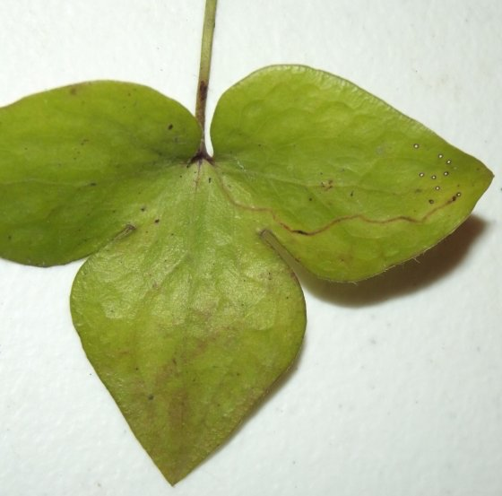
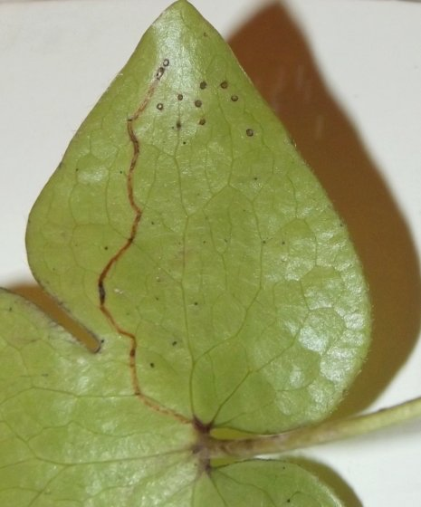
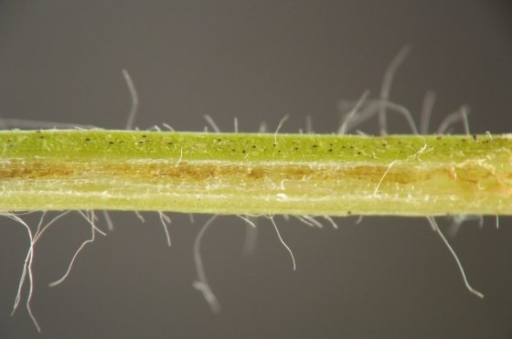
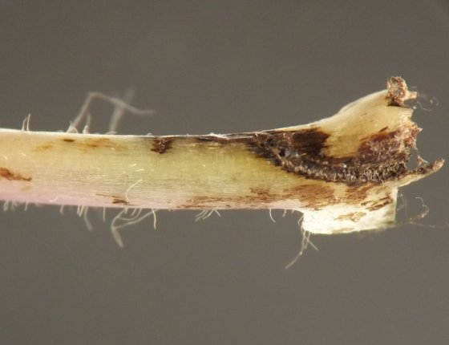

Petiole miner etc. (Diptera: Agromyzidae) in Anemone
| Record no.: | 0055 |
|---|---|
| Feeding guild: | Petiole miner/borer; leaf blade miner; apparent root miner/borer |
| Taxonomy: | Diptera: Agromyzidae |
| Stages observed: | trace |
| Distribution observed: | IA |
| Hosts in Anemone: | A. acutiloba (sharp-leaved hepatica) |
This mysterious insect begins feeding in the leaf blade of hepatica, where it creates a short, linear, dark brown mine that soon enters the petiole. The mine then proceeds straight down the petiole and disappears into the belowground parts of the plant, where the larva presumably does most of its feeding.
Some petioles from affected plants -- including the petiole in which the larva traveled from leaf blade down to the crown of the plant, as well as other petioles from the same plant -- may also contain short, dark brown or blackish tunnels in their very bases at the location where they emerge from the plant crown. These tunnels are much broader and more voluminous than the relatively narrow leaf blade and petiole-length mines, suggesting they are made by the older, larger larva, who must conduct brief excursions into the petiole bases before returning to the belowground parts of the plant.
I located leaf blade and petiole mines in mid-October, but by this time the leaves had already been abandoned by the larvae. The insect is tentatively identified to Agromyzidae based on (1) the presence, in multiple examples examined, of host-feeding punctures in the leaf blade surrounding the start of the mine; and (2) the ragged walls and absence of significant solid frass accumulation in the tunnels in the petiole bases, which together suggest the culprit is a fly. The identification to Agromyzidae should be understood as tentative.
One avenue for future work on this insect could involve determining when the leaf blade and petiole mines are still inhabited and collecting them at this time, which would allow observation of larvae.

 Prev
Prev
{kind=link}
{kind=link}

{kind=link}

{kind=link}

{kind=link}
{kind=link}
Page created: October 12, 2025. Last update: none